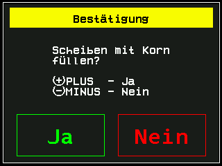
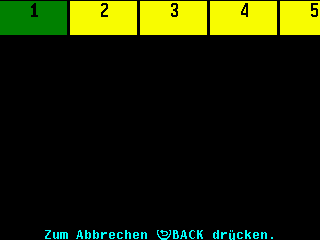
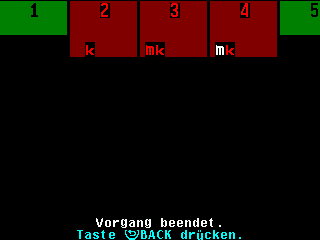
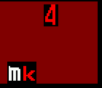

Scheiben mit Korn füllen
Drehen Sie die Säscheiben eines Einzelkornsägeräts mit Dosiermotoren, bis jede Scheibe Korn hält, damit die Aussaat vom ersten Meter an beginnt — wie Sie den Vorgang starten und das Ergebnis lesen.
Das gilt nur für Einzelkornsägeräte mit elektrischen Dosiermotoren für das Saatgut im Modus „Einzelkorn“. Ohne Saatmotoren im Profil oder in einem anderen Modus wird der Menüpunkt nicht angezeigt.
Werden die Scheiben von Elektromotoren angetrieben, stehen sie leer, bis die Motoren laufen. Fahren Sie mit leeren Scheiben los, bekommen die ersten Meter jeder Reihe nichts: Jede Scheibe muss erst Körner aufnehmen und bis zur Abwurfstelle mitführen. Das Füllen dreht die Scheiben bei stehender Maschine, damit die Aussaat vom ersten Meter an beginnt.
Halten Sie die Maschine an. Bei Fahrt ist der Punkt verborgen.
Drücken Sie auf dem Startbildschirm „MENU“. Wählen Sie den ersten Punkt, „Scheiben mit Korn füllen“, und drücken Sie „MENU“. Er ist auf jeder Zugriffsstufe offen.
Das Panel verlangt eine Bestätigung. Drücken Sie „PLUS“ oder berühren Sie „Ja“. „MINUS“, „Nein“, „BACK“ oder eine Berührung neben dem Fenster bricht ab.

Die Frage, bevor sich die Scheiben drehen. Beobachten Sie die Kacheln. Jeder Motor dreht seine Scheibe mit 4 U/min der angetriebenen Welle, bis der Kornsensor seiner Reihe das erste Korn registriert. Während der Vorgang läuft, sagt die unterste Zeile, dass „BACK“ ihn abbricht.

Der laufende Vorgang: Kachel 1 ist fertig und grün, die übrigen drehen noch. Haben alle Motoren fertig, gibt das Panel drei kurze Pieptöne und zeigt „Vorgang beendet.“ Lesen Sie die Kacheln in Ruhe ab und drücken Sie dann „BACK“, um zum Hauptmenü zurückzukehren.
Zum vorzeitigen Beenden drücken Sie „BACK“: Jeder Motor hält sofort an, kehrt zur Aussaatlogik zurück, und der Bildschirm schließt sich. Sie können sofort neu starten. Auf diesem Bildschirm wirkt nur „BACK“; die übrigen Tasten und Berührungen bewirken nichts.
Die Kacheln lesen

| Kachel | Zustand |
|---|---|
| Dunkelgrau, volle Höhe | Wartet, bis sie an der Reihe ist — es laufen nur acht Motoren gleichzeitig. |
| Gelb, oberer Teil | Läuft: Die Scheibe dreht sich. |
| Grün, oberer Teil | Fertig: Der Kornsensor hat ein Korn registriert. |
| Dunkelrot, volle Höhe, hellrote Nummer | Fehlgeschlagen: Die Scheibe ließ sich nicht füllen. Die Buchstaben nennen den Grund. |
Ein Motor schlägt fehl, wenn innerhalb von 1,25 Umdrehungen der Welle — etwa neunzehn Sekunden — kein Korn registriert wird. Ein Motor, der eine Störung meldet, wird angehalten und sofort als fehlgeschlagen gewertet; ein Motor außerhalb der Überwachung dreht sich nicht und gilt als fehlgeschlagen. Zusätzliche Motoren ohne eigenen Kornsensor drehen ihre Scheiben, werden aber als fehlgeschlagen gemeldet, weil kein Korn zu sehen ist. Düngermotoren nehmen nur teil, wenn auch sie im Modus „Einzelkorn“ laufen, jeweils gepaart mit dem Düngersensor derselben Nummer.
Buchstaben auf einer fehlgeschlagenen Kachel
Die Buchstaben stehen immer an denselben Stellen — m links, k in der Mitte, s rechts — und Rot heißt Störung, Weiß heißt aus der Überwachung genommen.

| Buchstabe | Bedeutung |
|---|---|
| m rot | Eine Störung des Motors während des Vorgangs. |
| m weiß | Der Motor ist aus der Überwachung genommen und kann nicht laufen. |
| k rot | Der Kornsensor sah kein Korn, während sich die Scheibe drehte. |
| s rot | Eine Störung des Kornsensors während des Vorgangs. |
| s weiß | Der Kornsensor ist aus der Überwachung genommen, oder dem Motor ist kein Kornsensor zugeordnet. |
Ist der Kornsensor aus der Überwachung genommen, dreht ein intakter Motor die Scheibe trotzdem etwa eineinviertel Umdrehungen, die Scheibe wird also gefüllt — das Panel meldet aber eine Störung, weil es nie ein Korn gesehen hat.
Ihre Maschine tut etwas, das diese Seite nicht beantwortet? Schreiben Sie an support@agriwelt.com — es antwortet ein Ingenieur.